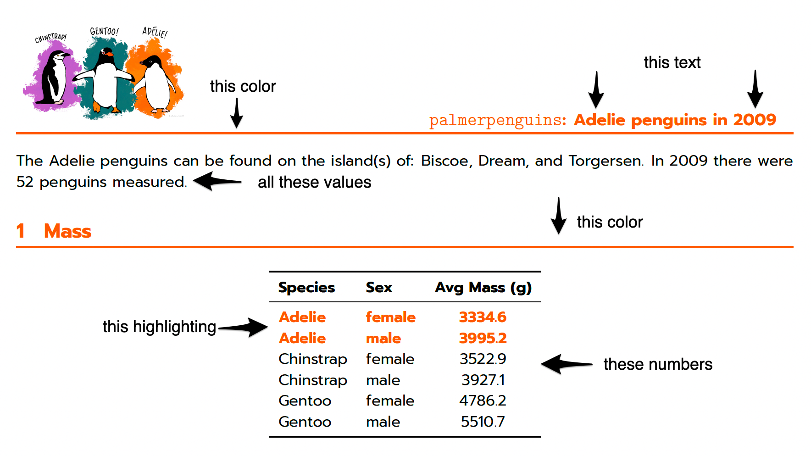

Parameterized reports in R (and Quarto!)
Creating parameterized documents (i.e., documents with outputs—text, plots, tables, etc—that change based on the values of the parameters that you select) is such a common task for data analysts, and it’s a task that can be made much easier with Quarto. (Quarto is a new open-source technical publishing system from RStudio. It is similar in many ways to R Markdown, except that it doesn’t require R, supports more languages, and combines the functionality of many R Markdown packages, e.g., xaringan, bookdown.) Those documents can take many output forms, but this post focuses specifically on PDF reports. For the example report I’m walking through here, I used data from the wonderful palmerpenguins data package because who doesn’t like 🐧?!
The full PDF is available here, and below is a screenshot, along with some annotations as to what elements in the report change automatically based on our parameters.

Today’s focus is mostly on the Quarto elements: how to customize the look of our parameterized PDF (like those colors and fonts!) and how to render it easily for the parameter values that I want. I won’t go into too much detail about how I incorporated the parameters into the R code itself, but the full .qmd file is here and I’m happy to answer any questions about those elements! (Throughout, I am coming from the perspective of using R and RStudio, though many of the customization elements will still apply if you are using a different coding language and/or IDE.)
Yes, this means LaTeX
Similarly to how Quarto uses reveal.js to make HTML presentations, Quarto uses LaTeX to make PDF documents. Part of the beauty of Quarto is that you don’t need to learn LaTeX—you can create great PDFs without it. But just like I enjoy learning more about CSS to customize my Quarto HTML products, I enjoy learning more about LaTex to customize my PDF products!
Standard disclaimer: I am not a LaTeX expert! The tips I offer below are certainly not the only solutions, and depending on your particular use cases they may not be the best solutions. But I think they are useful for someone getting their feet wet with LaTeX and learning how to use LaTeX elements to customize the look of their Quarto PDFs.
Let’s review how things work structurally: Quarto documents start with a YAML header. Below is the YAML header for this PDF.
---
format:
pdf:
mainfont: "Avenir"
sansfont: "Avenir"
geometry:
- top=0.75in
- right=0.75in
- bottom=0.75in
- left=0.75in
- heightrounded
number-sections: true
include-in-header:
- "penguin-header.tex"
toc: false
editor: source
execute:
warning: false
echo: false
params:
species: 'Adelie'
year: 2009
---You’ll see that the include-in-header option references a penguin-header.tex file. You can include raw LaTeX directly in the body of your Quarto document, which we’ll incorporate below, and/or you can reference LaTeX files (that’s the .tex extension) that can be executed before your Quarto document (as part of what’s known as the LaTeX preamble). Having a file like this is handy whether you want to customize an entire header page (resources on that available below) or to specify a few LaTeX packages and commands before you get into your Quarto document.
This is the content of our penguin-header.tex file:
\let\paragraph\oldparagraph
\let\subparagraph\oldsubparagraph
\usepackage{xcolor}
\usepackage{titlesec}
\usepackage[parfill=0pt]{parskip}
\usepackage{fontspec}
\setsansfont{Prompt}[
Path=Prompt/,
Scale=0.9,
Extension = .ttf,
UprightFont=*-Regular,
BoldFont=*-Bold,
ItalicFont=*-Italic,
]
\definecolor{Chinstrap}{HTML}{C25BCC}
\definecolor{Gentoo}{HTML}{047075}
\definecolor{Adelie}{HTML}{FF6600}
\titleformat{\section}
{\sffamily\Large\bfseries}{\thesection}{1em}{}[{\titlerule[0.8pt]}]You specify LaTeX packages like \usepackage{xcolor}. Here, we’re adding a package to help us define custom colors, a package for custom fonts, and a package to help make nifty section headers.
Custom fonts
If you want to use a system font in your PDF (meaning it’s already on your computer), you can adjust the values of the mainfont, sansfont and monofont options in the header YAML.
---
format:
pdf:
mainfont: "Avenir"
sansfont: "Avenir"If you would rather use a Google font, you can download it from the site and save the files into the same directory as your Quarto document. For the example below, I downloaded the Prompt font and added the following code to my penguin-header.tex file. This is setting my sans serif font to Prompt.
\setsansfont{Prompt}[
Path=Prompt/,
Scale=0.9,
Extension = .ttf,
UprightFont=*-Regular,
BoldFont=*-Bold,
ItalicFont=*-Italic,
]And then the command \sffamily is the first line (below the YAML) in my Quarto document and states that I want to use the font I specified in the penguin-header.tex file. This is an example of including raw LaTeX in the body of your document.
Custom colors
Using a LaTeX package like xcolor allows us to define custom colors like so: \definecolor{Chinstrap}{HTML}{C25BCC}. The penguin-header.tex file defines a color for each penguin species—Chinstrap, Adelie, and Gentoo—that we can use to render different colors depending on which parameter value of species we select.
But how to connect the custom-defined color to our parameter so that the right one is used?
In an R code block, you can refer to your report parameters with params$species. If you want to reference these parameters in the Quarto text, enclose like so: `r params$species`. And what’s so neat about Quarto is that you can use this inline code as part of the LaTeX code. So the following command will set the text color to the custom color we defined based on the species determined via the parameter: \color{`r params$species`}. If our parameter selects the Adelie species, then that piece of code will evaluate as \color{Adelie} and our orange-y #FF6600 will be used. If you want to set the color back to black, use \color{black}.
Rendering parameterized reports
There are three ways to render this type of parameterized report using Quarto. In increasing order of complexity (and usefulness!):
First. Manually change the parameter values in the header YAML of your .qmd file and hit Render in RStudio. This will create a PDF file in the same directory as your .qmd file with the same name as your .qmd file but with a .pdf extension. This is great for one-offs or for testing!
Second. If you prefer to work in the terminal, you can use the following command: quarto render penguins.qmd -P species:'Adelie' -P year:'2009'
Third. For this palmerpenguins data, we have potentially nine separate PDF reports to create: three years for three species. That’s a little annoying to do via the first two methods, and you can imagine how really annoying it could get if you had even more parameter combinations. Thankfully, we can leverage the quarto::quarto_render() function in R to automatically create a report for each parameter combination we want and name that file in a way that we specify.
runpdfs <- function(species, year) {
quarto::quarto_render(
"penguins.qmd",
output_format = "pdf",
execute_params = list(species = species, year = year),
output_file = glue::glue("{species} {year}.pdf")
)
}
purrr::map2(unique(penguins$species), unique(penguins$year),
runpdfs)The first chunk of code defines a new function called runpdfs that is based on the quarto::quarto_render() function. The two arguments to runpdfs are the two Quarto report parameters we have: species and year. Those arguments are used in the execute_params argument to specify the parameter values to Quarto and in the output_file argument to specify the name of the files.
The second chunk of code uses map2() from purrr to iteratively run that new function, runpdfs, for every unique combination of species and year from the penguins data set.
The code above will result in nine PDF files. The two available examples are Adelie 2009.pdf and Gentoo 2007.pdf.
Resources for learning more
The Quarto documentation for PDFs covers the basics of creating PDFs in Quarto and also lists all the available PDF options. There’s also the list of LaTeX variables for Pandoc.
For more specifics about customizing LaTeX within Quarto, I found the title page resources from NMFS Open Science to be incredibly helpful for inspiration and also for learning what the possibilities are.
One of my personal favorite methods for learning is reviewing others’ code. The files for this example, penguins.qmd and penguins-header.tex, are available on my GitHub and were designed to showcase some basic LaTeX structure and commands.